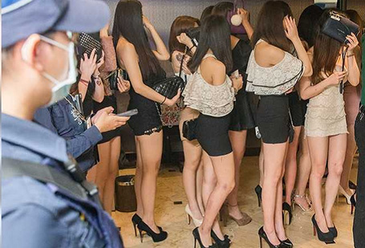

酒小姐轉戰傳播妹

酒店歇業衝擊太多人，行政、小姐，甚至泊車小弟或圍事「兄弟」，都會沒有收入。1名小姐說，自己經濟壓力大，可能要去當傳播才能度過疫情。圖為大門深鎖的酒店。
酒店歇業衝擊太多人，行政、小姐，甚至泊車小弟或圍事「兄弟」，都會沒有收入。1名小姐說，自己經濟壓力大，可能要去當傳播才能度過疫情。
中央流行疫情指揮中心9日宣布酒店、舞廳即日起暫停營業，地方政府都表贊成，業界雖感到錯愕，也只能乖乖配合。但有酒店業者指出，喝酒尋歡需求仍在，擔心酒店小姐、公關轉往KTV當傳播妹，屆時成為新的防疫破口，後果更不堪設想。
六都市政府配合中央決定，都組成聯合稽查小組要求酒店舞廳停業，台中市長盧秀燕昨率先宣布除酒店、舞廳外，視聽歌唱業、三溫暖業、特種咖啡茶室、飲酒店業、夜店業、電子遊戲場業等特種營業場所，即日起全面實施「實名制」，違者將罰3000元至1萬5000元，希望防疫加嚴、加密，共同對抗疫情。
高雄酒店業者透露，因新冠肺炎疫情，酒店業績下滑4成，早就等不到客人，昨突然宣布全面關閉酒店及舞廳，趕緊叫酒店公關等人員回來結清薪水；至於損失，依店家規模大小，每月平均損失數百萬至千萬者大有人在。
1名酒店幹部說，酒店歇業衝擊太多人，行政、小姐，甚至泊車小弟或圍事「兄弟」，都會沒有收入。1名小姐說，自己經濟壓力大，可能要去當傳播才能度過疫情。
收入恐立即斷炊的酒店小姐與少爺，是否將被政府列為紓困對象，「紓困陳時中」政務委員龔明鑫表示，這是一個今天發生的新議題，所有國民都是我們必須照顧的對象，我們會思考，如果因為這樣造成失業或生活上的困難，我想政府是責無旁貸。 至於酒店及舞廳停業後，其員工勞工薪水要如何給呢？勞動部表示，因為遭勒令停業為政府要求，不可歸責於勞雇雙方，就如同「颱風假」等情況，是否給薪仍由勞資雙方協議，但不會強制雇主給薪。
紐約新冠死亡數創新高 空拍曝壕溝集體埋葬
美國紐約州新冠肺炎確診患者10日來到16萬1807人，甚至超越全球排名第二的西班牙，死者人數也達7067人，這也促使當局著手加快死者下葬。媒體9日也拍到，穿著防護裝的工作人員將棺木埋進紐約市哈特島（Hart Island）的公墓。
從空拍機畫面可見到，約40具簡易棺木整齊排列在壕溝內，由工作人員鏟起泥土覆蓋，畫面還可見另外兩條近日挖出的壕溝。紐約市首席法醫長辦公室答覆媒體指出，每位死者的具體死因仍然待查，但確實有可能包含新冠肺炎死者。
紐約市矯正局指出，自該市每日新冠肺炎死者數首度突破250人的3月30日起，往哈特島的渡輪趟數已從每周一班增加到每周5班。市府並未說明，此舉是否因太平間壓力太大有關。但根據最新政策，法醫保留遺體的時間將從30天下修到14天，隨後就會裝上冷凍卡車，經渡輪送往哈特島。 美
國新冠肺炎確診患者累計達46萬6299人，已有16686人死亡。國家過敏與傳染病研究所所長佛奇博士指出，因社交隔離措施發揮作用，目前推算總死者人數為6萬人，明顯低於3月下旬估計的10萬至20萬人。